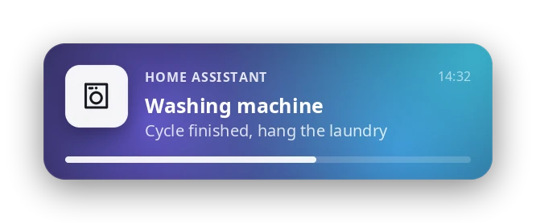
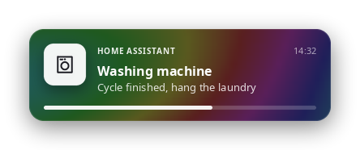
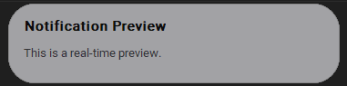

Four Notification Styles
Windows 11 Glass with a Soft or Full glow (new installs: Soft), Soft Aurora with three palettes, and the animated Classic. Static uses 0% CPU.
A lightweight, customizable, and non-invasive Windows desktop application that listens to MQTT topics and displays floating notifications in four styles: Windows 11 Glass by default, Soft Aurora, Classic and Static.
Built with modern technologies to ensure customization, speed, and an amazing user experience.
Windows 11 Glass with a Soft or Full glow (new installs: Soft), Soft Aurora with three palettes, and the animated Classic. Static uses 0% CPU.
Change scale, transparency, corner radius, and theme (Dark, Light or Same as Windows). Make it look exactly how you want.
Fully translated in English and Italian. Want another language? Just drop a JSON file in the locales folder!
Sits quietly in your system tray. Built-in auto-updater ensures you are always running the latest release.
Connect seamlessly with Home Assistant, Node-RED, or any custom MQTT broker on your local network.
Packaged with PyInstaller and InnoSetup installer for simple one-click installation on Windows.
Since version 1.1.0 you choose the look in Settings, under Notification Style. Classic and Static are still there.
Each style follows the notification theme: Dark, Light or Same as Windows, which reads the Windows app theme for every notification.
A tinted card with a thin animated rainbow border and a glow around it, Full or Soft. New installs start with Glass and the Soft glow.
Three colour blobs move slowly behind the text. Three palettes: Night, Sunset and Forest.

Both show an icon, the app name and the time, and a bar with the time left; a click closes them. Previews drawn by the app's own code; on Windows the font is Segoe UI.
A clean, unified UI designed to look beautiful on any wallpaper.
Values of a new install
MQTT Network
Appearance and Notifications


Run the pre-compiled installer or launch directly from Python source code.
Option 1: Pre-compiled Installer (.exe)
Download the latest release executable from GitHub and follow the setup wizard.
Option 2: Run from Source Code
# Clone repository
git clone https://github.com/giosci1994/PC-MQTT-Notifier.git
cd PC-MQTT-Notifier
# Install dependencies
pip install -r requirements.txt
# Launch application
python main.py